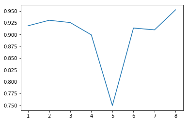

In [15]: runfile('D:/MTech IS/MTech-Onedrive/PSUPR/National University of Singapore/PRML CA2 - Image Classifier/submission/Veg_Classifier_Ensemble.py', wdir='D:/MTech IS/MTech-Onedrive/PSUPR/National University of Singapore/PRML CA2 - Image Classifier/submission')
models : len - 8 ['Veg_Classifier_CNN.hdf5', 'Veg_Classifier_CNN_Tuning_Add_Layer_Conv_Choice.hdf5', 'Veg_Classifier_CNN_Tuning_Add_Layer_Conv_Choice_he_normal_regularizer.hdf5', 'Veg_Classifier_CNN_Tunning_Add_Layer.hdf5', 'Veg_Classifier_CNN_Tunning_Add_Layer_Conv_Choice_Epoch_optimizer.hdf5', 'Veg_Classifier_CNN_Tunning_Add_Layer_Conv_Choice_he_normal.hdf5', 'Veg_Classifier_CNN_Tunning_Add_Layer_Conv_Choice_Xavier.hdf5', 'Veg_Classifier_Resnet.hdf5']
Size of training dataset- 4973
Size of training dataset- 4973
[01] model loaded : Veg_Classifier_CNN.hdf5
[02] model loaded : Veg_Classifier_CNN_Tuning_Add_Layer_Conv_Choice.hdf5
[03] model loaded : Veg_Classifier_CNN_Tuning_Add_Layer_Conv_Choice_he_normal_regularizer.hdf5
[04] model loaded : Veg_Classifier_CNN_Tunning_Add_Layer.hdf5
[05] model loaded : Veg_Classifier_CNN_Tunning_Add_Layer_Conv_Choice_Epoch_optimizer.hdf5
[06] model loaded : Veg_Classifier_CNN_Tunning_Add_Layer_Conv_Choice_he_normal.hdf5
[07] model loaded : Veg_Classifier_CNN_Tunning_Add_Layer_Conv_Choice_Xavier.hdf5
[08] model loaded : Veg_Classifier_Resnet.hdf5
Loaded 8 models
Best accuracy (on testing dataset): 91.87%
Best accuracy (on testing dataset): 93.03%
Best accuracy (on testing dataset): 92.55%
Best accuracy (on testing dataset): 89.93%
Best accuracy (on testing dataset): 74.93%
Best accuracy (on testing dataset): 91.38%
Best accuracy (on testing dataset): 91.00%
Best accuracy (on testing dataset): 95.26%
Standard deviation scores for all model: 0.06%

Best accuracy of average ensemble (on testing dataset): 94.58%
In [16]: